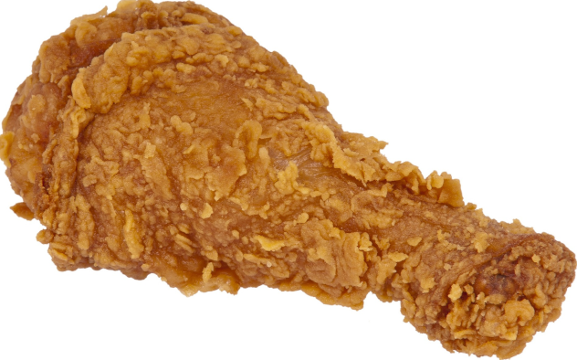

Fried Chicken
Homepage

Who doesn't enjoy tasty fried chicken once in a while? Below is a quick and easy recipe for fried chicken. The ingredients are few and great time saver. Crispy and delicious for all to enjoy.
Ingredients
- 12 chicken thighs (can use breasts, legs, wings, or drumsticks)
- 3 eggs
- 1 cup all-purpose flour
- 1 cup bread crumbs
- salt and pepper
- 1 teaspoon paprika
- 1/2 cup vegetable oil
Directions
- Preheat oven to 350 degrees F.
- Place flour in bowl. Season it with salt and pepper. Put the bread crumbs in another bowl. Beat the eggs in another bowl.
- Coat the chicken in the flower, then egg, then bread crumbs. Coat each piece individually, until all pieces are coated.
- Add oil into large baking dish. Add the already coated chicken and sprinkle paprika for taste. Bake into the preheated oven for 30 minutes. Turn pieces over and bake for another 30 minutes.
- Remove the chicken dish from the oven. Drain each piece individually on paper towels.